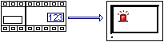
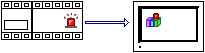

|
|
|
|
|
|
|
|
A diagnostic alarm group is a collection of alarms that reside in a PLC's diagnostic buffer. For information about the diagnostic buffer, see Section 5.5, Working with Alarms on the Equipment (Diagnostic Buffer).
Alarm Group |
Diagnostic Alarm Group |
 |
 |
Diagnostic alarms have the following similarities with standard Vijeo-Designer alarms.
You can display an alarm group, diagnostic alarm group, or alarm category in an alarm summary (see Section 16.3.2.1, Displaying Diagnostic Alarms) or alarm banner (see Section 16.4, Alarm Banner).
An alarm category can include both alarm groups and diagnostic alarm groups.
Actions can run when the alarm is selected in the alarm summary. See Section 16.3.4.2, Touch Actions.
You can send alarms to the printer or save alarms to file. See sections 16.3.5.2, Configuring Real-Time Printing, 16.3.5.3, Configuring Batch Printing, or 16.3.6, Outputting Alarms and Events to a .CSV File.
You can use counters to show the number of alarms in each state. See Section 16.2.4.1, Alarm Group Settings: Counters Tab.
You can run alarm operations such as acknowledge and delete.
Diagnostic alarms support most alarm summary and alarm group script methods, except for the alarm group's clearSum, getCurrent, and getSum methods.
Diagnostic alarms have the following differences with standard Vijeo-Designer alarms.
Diagnostic alarms and standard alarms are configured differently.
To display the PLC's diagnostic alarms in Vijeo-Designer, add a diagnostic alarm group, define its settings, and display it in an alarm summary or alarm banner.
To display standard Vijeo-Designer alarms, define the alarm in a variable, assign the alarm to an alarm group, and display it in either an alarm summary or alarm banner.
You can display diagnostic buffer alarms on multiple target machines. Each alarm would display the same message and date and time stamp. Standard Vijeo-Designer alarms display only on the target machine where they are set up.
The alarm message for diagnostic alarms is the comment from the Derived Function Block (DFB), System, or SFC/Grafcet. Standard Vijeo-Designer alarms specify an alarm message.
Date and time stamps of diagnostic alarms are generated and stored on the PLC for precision. Standard alarms are generated and stored on the target machine.
The limit for diagnostic alarms, which can be up to 1000, is set up in the PLC configuration software. For standard alarms, the logical limit is 10,000 per alarm group, and the physical limit is defined by the available space in SRAM. For more information, see Section 25.3.3, Checking Memory Usage.
Alarm Behavior must be Mandatory ACK. Optional ACK is not available for diagnostic alarm groups.
The alarm summary's clear, clearAll, delete, and deleteAll operations do not affect alarms in the PLC's diagnostic buffer. These script methods and buttons interact only with the alarm summary display.
Alarm Type |
Alarm Command |
Alarm State |
|||
ACTIVE |
UNACK |
ACK |
RTN |
||
Active |
Clear/ClearAll |
|
— |
||
Delete/DeleteAll |
|
— |
|||
History |
Clear/ ClearAll |
|
|
|
|
Delete/DeleteAll |
|
|
|
|
|
Log |
Clear/ ClearAll |
|
|
|
|
Delete/DeleteAll |
|
|
|
|
|
|
Supported |
Unsupported |
The Vijeo Designer alarm summary follows what is displayed in the PLC's diagnostic buffer. If the alarm state is not ACK and returned, it creates a new line when the next alarm is triggered. Once the alarm state is ACK, the line is deleted from the PLC's diagnostic buffer, and the behavior will also be reflected in the Vijeo Designer alarm summary. You can see the same behavior using the Diagnostic Viewer feature in Unity Pro.
There are special script methods that allow you to interact with a DFB alarm's .sto files. See Section 18.9.1.7, DiagBuffer Methods. Alternatively, you can use the STO Message String variable to interact with the DFB alarm's .sto files, see Section 16.3.2.3, Displaying Derived Function Block Status Messages.
When the diagnostic buffer sends an alarm, Vijeo-Designer stores the initial value of status words associated with the DFB alarm. Using the latest values on the PLC, the status words are updated when the state of the alarm changes by an acknowledgement, or by another viewer performing a retrigger fault causes operation. Vijeo-Designer does not update status words when using the decodeStatusWords or getStatusWords script methods.

Vijeo-Designer does not support retrieving and viewing fault cases of diagnostic alarms.
After a diagnostic alarm has been acknowledged and returned to normal, the diagnostic buffer on the PLC removes the alarm. For Vijeo-Designer's History and Log alarm summary displays, the returned to normal alarm will remain as long as you are connected to the PLC. After you disconnect from the PLC (log off or a communication error occurs), and communication to the PLC is restored, the display is refreshed with the current diagnostic buffer contents and the returned to normal alarm will not display.
When the target machine starts up, communication between the diagnostic alarm group and the PLC does not begin until one instance of the polling rate time elapses. For example, if you have a 90.0 second polling rate and the target machine starts up, the diagnostic alarm group will not communicate with the PLC after startup until 90.0 seconds elapses.
Diagnostic alarm groups that have the same polling rates will update one after the other in the same thread. If a diagnostic alarm group cannot update because of a communication problem, the other diagnostic alarm groups in the thread do not update until the diagnostic alarm group experiencing the communication problem can either update or time out.